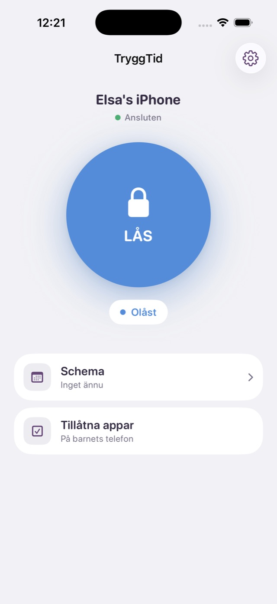
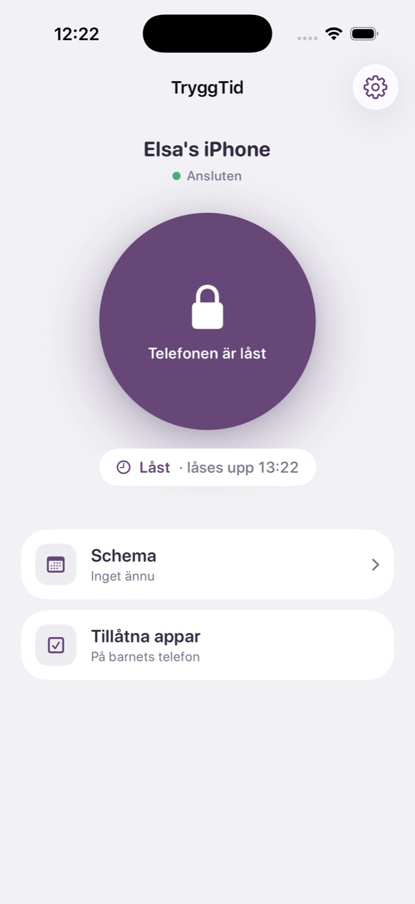

Tidsbestemte låse
30 minutter, en time, to timer eller til du låser op. Du kan altid se, hvornår låsen slutter.
Forældrekontrol til iPhone
Ét tryk på LOCK, og de apps, du har valgt, er låst på dit barns iPhone. Aftensmad, lektier eller sengetid: du bestemmer, hvornår det er tid til en skærmpause.
Til iPhone med iOS 16 eller nyere – både din telefon og dit barns.


Blok er en forældrekontrol app til iPhone. Du låser udvalgte apps på dit barns iPhone på afstand – fra din egen telefon, med ét tryk. Låsen kan vare, til du låser op, i et bestemt tidsrum eller følge skemaer for skoletid og sengetid.
Apples Skærmtid håndhæver låsen, så den holder, selv om appen lukkes eller telefonen genstartes. Blok blokerer apps – den overvåger ikke dit barn.
Klar på få minutter. Ingen konto til dit barn og ingen besværlige indstillinger.
Vælg "Parent" (forælder) på din iPhone og "Child" (barn) på dit barns.
Indtast koden fra din telefon, godkend Skærmtid, og vælg de apps, der skal blokeres.
Uanset hvor du er. Lås lige så nemt op – eller lad en tidsbestemt lås klare det for dig.
Blok gør én ting: giver dit barn en pause fra telefonen, når du bestemmer det.
30 minutter, en time, to timer eller til du låser op. Du kan altid se, hvornår låsen slutter.
Vælg dage og tidspunkter, så låser telefonen sig selv og låser op igen.
Lås spil og sociale medier, og lad Telefon og Beskeder være åbne. Nødopkald virker altid.
Låsen bygger på Apples Skærmtid og holder, selv om appen lukkes eller telefonen genstartes.
Indstillingerne på dit barns telefon er beskyttet af en PIN-kode, som kun du kender.
Par op til tre telefoner, og lås hver enkelt for sig.
Blok læser ikke beskeder, sporer ikke placering og indsamler ikke, hvad dit barn laver på telefonen. Den låser – og det er det.
Installér Blok på din og dit barns iPhone, og par dem med en kode. Tryk derefter på LOCK i appen på din telefon, så bliver de apps, du har valgt, blokeret på dit barns telefon. Du kan låse indtil videre, i et bestemt tidsrum eller med skemaer.
Låsen sendes straks til dit barns telefon, men hvor hurtigt den når frem, afhænger af telefonens forbindelse og iOS. Er telefonen offline, træder låsen i kraft, når den er online igen, og appen bliver ved med at prøve, indtil telefonen har svaret. En app, der allerede er åben, låses, næste gang dit barn skifter app eller låser skærmen op. Din telefon viser, når dit barns telefon har bekræftet låsen.
Blok bygger på Skærmtid, men gør det til ét tryk fra din egen telefon: lås nu, tidsbestemte låse og skemaer – med en tydelig knap, der viser, om dit barns telefon er låst.
En iPhone med iOS 16 eller nyere og Blok installeret. Dit barn skal ikke have sin egen konto. Du godkender Skærmtid på dit barns telefon én gang, når I parrer telefonerne.
Indstillingerne er beskyttet af din PIN-kode, og iOS håndhæver låsen, så den holder, selv om appen lukkes eller telefonen genstartes. Den eneste vej uden om er at nulstille telefonen til fabriksindstillinger, og det kan ingen forældrekontrol forhindre.
Ja. Du vælger selv, hvilke apps der låses, så Telefon og Beskeder kan forblive åbne. Nødopkald virker altid.
Nej. Blok læser ingen beskeder, sporer ikke placering og indsamler ikke, hvilke apps dit barn bruger. Valget af apps, der skal låses, bliver på dit barns telefon.
Ja. Når du parrer telefonerne, vælger du, hvilke apps på dit barns iPhone der skal låses, fx TikTok, YouTube, Snapchat, Instagram, Roblox eller andre spil. Telefon, Beskeder og andre apps, du vil holde åbne, virker som normalt.
Blok har et abonnement, Blok Plus, og prisen for dit land vises i App Store. Det virker altid at låse dit barns telefon op – også uden abonnement. Blok har ingen reklamer.
Ja, navnet er almindeligt. Denne app hedder Blok: Forældrekontrol og er lavet til familier: en forælder låser apps på sit barns iPhone fra sin egen iPhone. Det er ikke en app til at begrænse din egen skærmtid. Kig efter ikonet: en hvid hængelås på en blå cirkel.
Ikke endnu. Blok er lavet til iPhone – både til dig og dit barn.